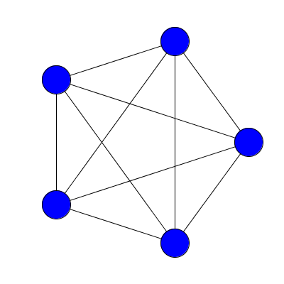
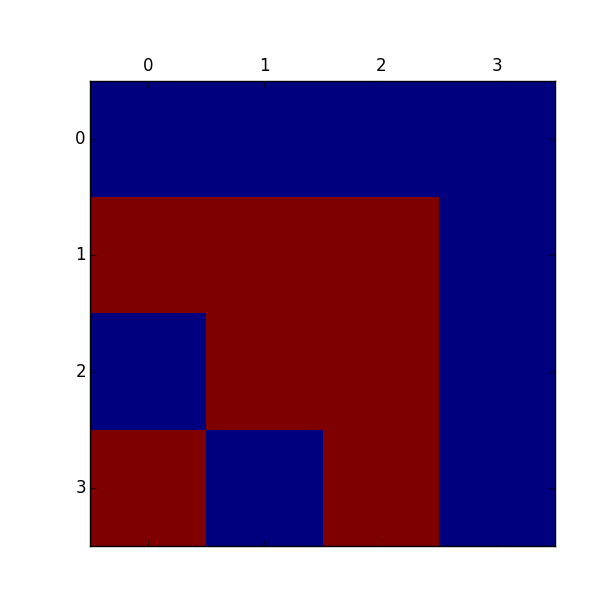
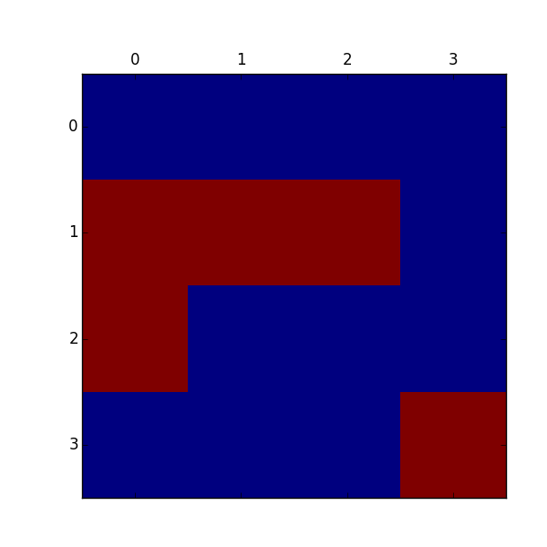
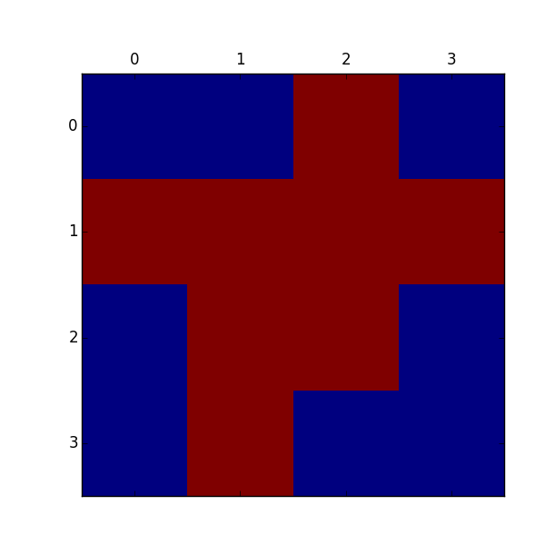
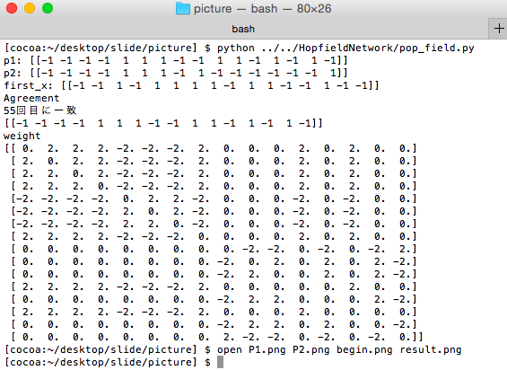

<!doctype html>
<html lang="en">

	<head>
		<meta charset="utf-8">

		<title>Computer Science Seminar 1st Round</title>

		<meta name="description" content="A framework for easily creating beautiful presentations using HTML">
		<meta name="author" content="Hakim El Hattab">

		<meta name="apple-mobile-web-app-capable" content="yes" />
		<meta name="apple-mobile-web-app-status-bar-style" content="black-translucent" />

		<meta name="viewport" content="width=device-width, initial-scale=1.0, maximum-scale=1.0, user-scalable=no, minimal-ui">

		<link rel="stylesheet" href="css/reveal.css">
		<!--テーマ-->
		<link rel="stylesheet" href="css/theme/white.css" id="theme"> 

		<!-- Code syntax highlighting -->
		<link rel="stylesheet" href="lib/css/zenburn.css">

		<!-- Printing and PDF exports -->
		<script>
			var link = document.createElement( 'link' );
			link.rel = 'stylesheet';
			link.type = 'text/css';
			link.href = window.location.search.match( /print-pdf/gi ) ? 'css/print/pdf.css' : 'css/print/paper.css';
			document.getElementsByTagName( 'head' )[0].appendChild( link );
		</script>

		<!--MathJax-->
		<script type="text/javascript"
    	src="https://c328740.ssl.cf1.rackcdn.com/mathjax/latest/MathJax.js?config=TeX-AMS-MML_HTMLorMML">
		</script>

		<!--[if lt IE 9]>
		<script src="lib/js/html5shiv.js"></script>
		<![endif]-->
	</head>

	<body>

		<div class="reveal">

			<!-- Any section element inside of this container is displayed as a slide -->
			<div class="slides">
				<section data-markdown=""data-separator="^\n---$"data-separator-vertical="^\n>>>$"> 
					<script type="text/template">
						
## Machine Learning
### Neural Network		
- - -
So Yamaguchi  
j113126

<small>コンピュータ科学セミナー第１回用<br>2015.5.25</small>

<aside class="notes">
  発表者が見るノート   
  伝えたいことをメモ  
</aside>


---
### 機械学習	#とは
- - -
"Machine learning is the science of getting computers to act without being explicitly programmed."  Andrew Ng  

一般的にはコンピュータの振る舞い方(モデル)を(大量の)データから学習ことにより獲得する.
<small>引用:[機械学習によるデータ分析まわりのお話](http://www.slideshare.net/canard0328/ss-44288984)</small>


<aside class="notes">
  自分は現在,機械学習の大好きマンなので今回10分の時間を用いて機械学習の説明をしたいと思っています.
　ただ機械学習の説明だけでも10分言ってしまうのでここでは概要だけざっくばらんに説明します.本日は機械学習の説明をざっくりした後,今回は今私がはまっているニューラルネットワークについて説明したいと思います.	
　ニューラルネットワークの話題でホットな話しといえばここ２、３年　多層ニューラルネット

  北山先生の「知識工学」を受講した方は既知事項が多いと思いますがご了承ください. 
</aside>

>>>
###　つまり
- - -
####"ヒトの情報処理能力を超えて  
####複雑なデータを分類＆予測できるようにするもの"
<small>引用:[Takashi J. OZAKI/銀座で働くデータサイエンティストのブログ](http://tjo.hatenablog.com/entry/2013/04/30/191947)</small>

>>>
###実用例  
- - - 
- ######Google日本語入力
- ######電子辞書などの手書き文字認識(OCR)
- ######デジカメやスマホカメラの自動顔認識
- ######Amazonの「この商品を買った人はこんな商品も買っています」

<aside class="notes">
実用例以外にも機械学習を用いられる面は多々ある.
機械学習は隠れたルールや法則を見つけ出すにも有効である.
データマイニングはその最たる例である.
「ビールを購入した人は紙おむつもあわせて購入することが多い」なんていうのを聞いたことがある人もいるはずだ
これも機械学習を用いて傾向を発見した.　ただしビールと紙おむつの組み合わせに関しての信憑性は微妙だが.

</aside>

>>>
### 機械学習ができること 
- - -
- 分類  
- 回帰  
- クラスタリング  
- 規則   

<aside class="notes">
分類: データには、種類を割り当てられたことを意味するラベルを付けます。例えば、スパム/スパムではない、不正/不正ではない、といった風に。モデル化された決定は、ラベルの貼られていない新しいデータにラベルを割り当てます。これは問題の区別、グループ間の相違のモデル化と考えることができます。

回帰: データには、ラベルではなく、実際の値（例えば浮動小数点数）のラベルが付けられます。理解しやすい事例としては、時刻と連動した株価のような時系列データです。モデル化された決定は新たな予測されていないデータを予測することを評価するものです。

クラスタリング: データはラベル付けされませんが、データの中の類似性と自然な構造の別の尺度に基づいてグループ分けされます。上記のリストからの例では、名前なしの顔だけで画像を編成するものがそれにあたるでしょう。その場合、Mac の iPhoto のように、ユーザーがグループに名前を割り当てなければなりません。

ルールの抽出: データは、問題のルール（前提/結果 別名if-then）を引き出すための基礎として使われます。そのようなルールは、大体そうなのですが、扱いにくいかもしれません。つまり、データの特性間に統計学的に支持できる関係を発見するということであり、そのとき予測されている何かを含んでいる必要はないのです。ビールとおむつの購入の間にある関連性の発見がその一例です.
[引用元](http://postd.cc/practical-machine-learning-problems/)
</aside>


>>>
### 機械学習をする目的
- - -
学習データに対して正しく推定すること  
ではなくて  
未知のデータに対しても正しく推定する事を目指す  
→汎化能力  


---
### Neural Network #とは
- - - 
脳機能に見られるいくつかの特性を計算機上  
シミュレーションによって表現することを目指した  
数学モデル  

<aside class="notes">
  ニューラルネットワーク #とは
  脳機能に見られるいくつかの特性を計算機上のシミュレーションによって表現することを目指した数学モデルである.

  概要を簡単に言うと

  「脳の中には多数の神経細胞つまりニューロンが存在しています.
  各ニューロンは多数の他のニューロンから信号を受け取り、また他の多数のニューロンへ信号を受け渡しています.脳はこの信号の流れによって様々な情報処理を行っています.
  この仕組みをコンピュータ内に実現しようとしたものがニューラルネットワークです」
  (静岡理工化大学　引用)
  
  ニューロン間をシナプスで結ぶ.そのシナプスの結合によりネットワークを形成したノードが学習によってシナプスの結合強度を変化させ、問題解決能力を持つようなモデル全般を指す.

  ニューラルネットワークは先ほど説明した正解の入力によって問題を最適化していく教師あり学習の面
  そして,教師信号を与えない(正解を入力しない)教師なし学習に分けられる.
  
  主にニューラルネットワークは現在、特徴量に基づく画像認識、市場における顧客データに基づいた物の類推、パターン認識、データマイニングなどの様々な応用に用いられている.

  ニューラルネットワークにも様々なモデルがありますのでここでは説明を省略します.
</aside>


---
### Hopfield Network
- - -
・ホップフィールドネットワークはニューラルネットワークの１モデル


<aside class="notes">
  ホップフィールドネットワークはニューラルネットワークの１モデルです
  アメリカの物理学者ジョン・ホップフィールドが提唱した.
  神経つまりニューロン間に対照的な相互作用があり同期しないネットワークである.
  ネットワークによる連想記憶のモデルとしてニューラルネットブームの火つけ役になったとも言われる??

  脳のニューロンをモデル化したシミュレーションの一種である	
  つまり,一つの行列に複数の画像を埋め込む技術である.

</aside>

>>>
### Image
- - -


<aside class="notes">
上記がホップフィールドネットワークです.	
</aside>

---
###　algorithm
- - -
####核
1.ニューロンが両方とも活性していれば,その間のシナプスは強化される.   
2.ニューロンが両方とも活性していない状態ならその間のシナプスは強化される.  
3.ニューロンが片方しか活性していれば,その間のシナプスは弱まる.   

>>>
### algorithm
- - -
1. ネットワークに記憶させるパターンに従い重みwを設定する
2. ランダムにノードiを選ぶ
3. ノードの状態yを計算する
4. ノードの状態により出力を変える
5. 2-4を繰り返すと記憶した状態に至る  

>>>
### 具体的には
- - -
ノイズデータから元の記憶したデータが取り出せる    

つまり人間の記憶の仕組みに近い  

<aside class="notes">
	では先ほどのアルゴリズムの詳しい計算方法について説明していきます.
</aside>

>>>
### 重み設定  
$
  w\_{ij} = \sum\_{s} x\_i^s x\_j^s    
$  
sは記憶させるパターンを指す.  
複数パターンがある場合は総和する.  
~~~python  
for i in range(x.size):
	for j in range(x.size):
		if i==j:
			w[i,j] = 0
		else:
			w[i,j] =  p1[0,i]*p1[0,j] + p2[0,i]*p2[0,j]
~~~

>>>
### ~~学習~~ 想起

$
y\_i= \sum\_{j=0}^N w\_{ij} x\_{j}
$


~~~python  
for i in range(x.size):
		y = y + (w[k][i]*x[0,i])
	if y<0:
		x[0,k] = -1
	elif y>0:
		x[0,k] = 1
~~~

---
### 今回すること
- - -
ホップフィールドネットワークでノイズありの画像からノイズなしの画像つまり元画像に復元してみたいと思います.

<aside class="notes">
  今回できるようになること
  2つの画像データを一つの脳的なものに記憶させる例をあげる
</aside>

>>>
###例
- - -

>>>
### 二つのパターン
- - - 

</img></img>

>>>
### 初期値
- - -


>>>
### プログラムを実行する
- - -


>>>
###　実行した結果
- - -
  
[これはパターン1](#/5/2)

---
###実演

---
###　まとめ
- - -
1. 今流行りのディープラーニングは制限付きボルツマンマシンが何層も積み重なります.　　
2. その制限付きボルツマンマシンはホップフィールドネットワークを下地にしている.　　  
3. つまりホップフィールドネットワークが理解できればボルツマンマシンもわかる??  
4. ボルツマンマシンがわかればディープラーニングがわかる?? (飛躍しすぎ)  
5. ✌('ω'✌ )三✌('ω')✌三( ✌'ω')✌ 

<aside class="notes">
DeepLearningとは
一言で言うとコンピュータで人間の脳の仕組みを再現するような仕組みです.
Deep Learningはコンピュータの学習手法の一つです。
先ほど説明した教師あり学習、教師なし学習の他で説明した深層学習になります.
2012年　GoogleがコンピュータにたくさんのYoutube画像を見せネコの顔を自発的に学ばせたということで有名ですね。

[質問]DeepLearningを聞いた事ある人はいらっしゃいますか?

このディープラーニングには様々な部品が積み重ねて高い性能を出しています.
その一つが制限付きボルツマンマシンでありそのボルツマンマシンの下地になっているのが
今回説明したホップフィールドモデルになります.

簡単にボルツマンマシンについて説明します.
ボルツマンマシンはホップフィールドネットワークの想起部分
これをボルツマン分布による確率的な処理に変更したものである.
ホップフィールドネットワークでは、初期値依存で記憶させた画像のうちのどれを思い出すのかが決まっていた。
ボルツマンマシンでは、確率的な処理により、初期値の依存性が減った。

</aside>

---
### 展望
- - -
セミナーでDeepLearningについて説明したい(予定)  
とにかく機械学習は楽しいです.  
人工知能の分野も楽しいです.   

---
### 参考/引用
- - -
1. [静岡理工科大学　菅沼研究室](https://www.sist.ac.jp/~suganuma/kougi/other_lecture/SE/net/net.htm,"ニューラルネットワーク")
2. [分からんこと多すぎ](http://rishida.hatenablog.com,"分からんこと多すぎ")
3. 学習とアルゴリズム　電気学会　森北出版株式会社
4. [記憶を行列計算でシミュレートしてみよう](http://www.gaya.jp/spiking_neuron/matrix.html,"matrix")
5. [かんたんHopfieldネットワーク](http://memeplex.blog.shinobi.jp/人工生命・人工知能/-deep%20learningシリーズ-%20かんたんho)

- 今日のスライド:http://ayaneru.github.io/slide/#/ 


    


					</script>
				</section>
			</div>
		<script src="lib/js/head.min.js"></script>
		<script src="js/reveal.js"></script>

		<script>

			// Full list of configuration options available at:
			// https://github.com/hakimel/reveal.js#configuration
			Reveal.initialize({
				controls: true, //右下のコントロールを非表示
				progress: true, //下部の進捗バーを非表示
				slideNumber: true,　//右下にスライドのページ番号を表示
				history: true, //各ページをブラウザの履歴に残す
				center: true, //スライドの垂直方向を中央表示をしない(上寄せにする)
				touch: false, // タッチ操作を無効化
    			loop: false, // スライドをループさせる
    			rtl: false,  // 右から左へのスライド
    			fragments: true,// fragmentsを無効化する
    			autoSlide: 0, // 自動スライドをミリ秒単位で設定。デフォルトは0（自動スライドしない）
    			autoSlideStoppable: false ,// 左下の自動スライド停止用のボタンを非表示にする
    			mouseWheel: false, // マウスのホイールによるスライドを可能にする

    			//スライドの移動方法
    			// none/fade/slide/convex/concave/zoom
				transition: 'slide',
				
				math: {
        		mathjax: 'http://cdn.mathjax.org/mathjax/latest/MathJax.js',
        		config: 'TeX-AMS_HTML-full'  // See http://docs.mathjax.org/en/latest/config-files.html
        		},
				

				// Optional reveal.js plugins
				dependencies: [

					{ src: 'lib/js/classList.js', condition: function() { return !document.body.classList; } },
					{ src: 'plugin/markdown/marked.js', condition: function() { return !!document.querySelector( '[data-markdown]' ); } },
					{ src: 'plugin/markdown/markdown.js', condition: function() { return !!document.querySelector( '[data-markdown]' ); } },
					{ src: 'plugin/highlight/highlight.js', async: true, condition: function() { return !!document.querySelector( 'pre code' ); }, callback: function() { hljs.initHighlightingOnLoad(); } },
					{ src: 'plugin/zoom-js/zoom.js', async: true },
					// Speaker notes
					{ src: 'plugin/notes/notes.js', async: true },
					// MathJax
        			{ src: 'plugin/math/math.js', async: true }
        			// Remote control your reveal.js presentation using a touch device
					//{ src: 'plugin/remotes/remotes.js', async: true, condition: function() { return !!document.body.classList; } }

				]
			});

		</script>

	</body>
</html>
<!--
	**操作方法**

キー(代用) 		:操作
→(i) 			:次のスライドへ水平移動
←(h)　 			:前のスライドへ水平移動
↓(j)　 			:下のスライドへ垂直移動
↑(k)　 			:上のスライドへ垂直移動
space(n)		:次のスライドへ垂直=>水平の順に移動
shift+space(p)	:前のスライドへ垂直=>水平の順に移動
home			:最初のスライドへ
end 			:最後のスライドへ
.(/)(b)			:ブラックアウト/ブラックイン
Esc(o)			:概要表示
f  				:全画面表示(fullscreen) Escで戻す

	**PDF convert**

1.URLにindex.html?print-pdfを付与
2.comand+pで印刷画面表示
3.レイアウトを横にしてpdfにして保存

	** 数式を書く場合**
1.まず表記はtex
2.$$ここにtexで書く$$

	**　内部リンク **
1.<p class="fragment">（[内部リンク](#/4/1)）</p>

-->